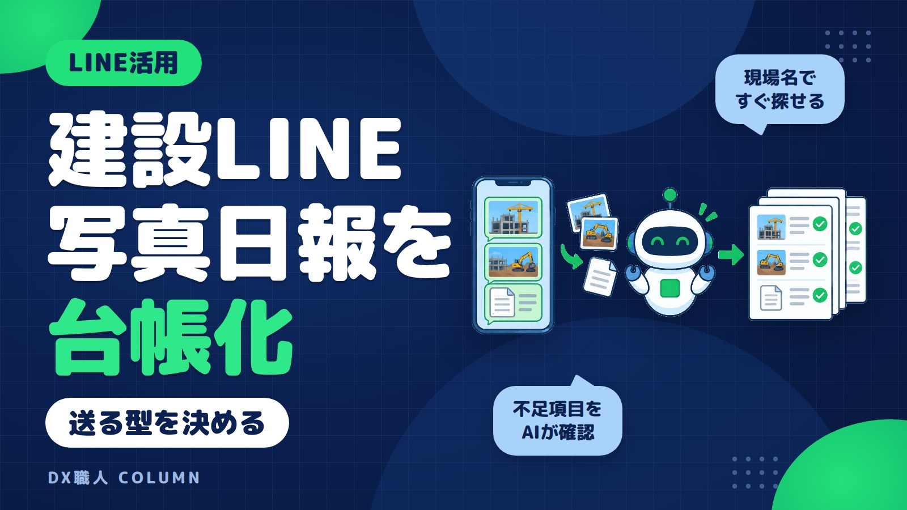

建設会社のLINE業務利用で写真日報見積を散らばらせない方法
現場ではLINEが早い一方、写真、日報メモ、見積依頼が別々のトークに残りがちです。この記事では、建設会社がいつものLINEを業務の入口にして、ゼネコンや協力会社との連絡ルールからAIシステムでの台帳化まで整理する方法を紹介します。

この記事の要点
- LINEは入口、台帳は別に作る
- 写真には現場名と一言を添える
- 協力会社との送信ルールを決める
- LINE WORKSは管理向き
- AIで分類と下書きを減らす
建設会社がLINEを業務で使うときの基本
建設会社でLINEを業務に使うこと自体は、珍しくありません。現場写真、到着時間、追加工事の相談などは、電話より残しやすいからです。
ただし、LINEだけで終わらせると困ります。写真はグループに流れます。見積依頼は別のトークに残ります。日報に使いたいメモも、夜には探しにくくなります。
大事なのは、LINEを連絡の入口にして、その先に整理する場所を作ることです。建設業のLINE業務改善は、LINEをやめる話ではありません。いつものLINEから、現場の情報を台帳や日報の材料に変える話です。
DX職人では、現場が新しいアプリを覚えなくても使える形を重視します。LINEに送った内容をAIシステムが読み取り、見積、写真、日報、請求確認などに分ける流れを作ります。
ゼネコンや協力会社とのLINE連絡はルールを先に決める
ゼネコンや協力会社とのやり取りでも、LINEは早くて便利です。現場での確認、搬入時間、写真の共有には向いています。
一方で、正式な提出方法が決まっている書類や契約に関わる内容は、相手先の指定を優先します。LINEは便利な連絡手段ですが、すべてをLINEだけに寄せる必要はありません。
まず決めたいのは、次の5つです。
- 案件名や現場名を必ず入れる
- 文頭に【確認】【変更】【見積】などを付ける
- 急ぎは電話したあとにLINEで残す
- 写真には場所、工程、時間を一言添える
- 受付担当と確認担当を決める
たとえば協力会社から写真だけが送られてくると、事務所では判断できません。そこで、【写真】佐藤ビル 2階 天井下地 施工後 15時、のように短く添えてもらいます。
長い文章は不要です。最低限の型があるだけで、あとから探す手間が減ります。AIシステムにも分類しやすい情報になります。
LINE広告と業務利用は目的が違う
LINEと聞くと、集客用のLINE広告やLINE公式アカウントを思い浮かべる方もいます。これらは、見込み客への案内や問い合わせ受付に向いています。
一方で、この記事で扱うのは業務利用です。現場から来る写真、日報メモ、見積依頼、納品書の確認を整理するためにLINEを使います。
広告は、お客様に知ってもらうためのものです。業務利用は、すでに動いている現場の情報を会社に残すためのものです。目的が違うため、見るべきポイントも違います。
| 使い方 | 主な目的 | 建設会社での例 |
|---|---|---|
| LINE広告 | 集客 | 見学会やサービス案内 |
| LINE公式アカウント | 顧客や外部からの受付 | 問い合わせ、点検依頼 |
| LINEの業務利用 | 現場情報の整理 | 写真、日報、見積依頼 |
| LINE＋AIシステム | 台帳化と下書き | 見積一覧、日報下書き |
現場の困りごとが、写真を探すことや見積依頼の聞き直しなら、広告の話ではなく業務の入口づくりから考えます。
写真・日報・見積依頼をLINEで散らばらせない送信型
現場からのLINEを整理するには、送る型を決めます。難しい入力フォームは不要です。文頭の言葉と、必要な項目だけで十分です。
見積依頼なら、次のように送ります。
【見積】山田邸 外構追加 現場：山田邸 内容：フェンス2m追加、既存ブロック上 希望：今週中に概算がほしい 写真：現場写真を3枚添付
この形なら、事務所はすぐ確認できます。AIシステムをつなぐと、次のような返答も作れます。
受付しました。見積依頼として登録しました。確認が必要な点は、フェンスの種類、色、高さです。
日報に使う写真なら、次のように短く送ります。
【日報】佐藤ビル 3階 配管 施工後 15時 人数：2名 作業：配管固定、通水確認 写真：施工後を2枚添付
写真だけを送ると、あとで何の写真か分かりません。現場名と一言を添えるだけで、日報の材料になります。日報づくりの詳しい流れは、LINE日報AIで現場メモから建設日報の下書きを作る手順でも解説しています。
LINE WORKSと建設業で使う通常のLINEの違い
建設会社が迷いやすいのが、通常のLINE、LINE公式アカウント、LINE WORKSの違いです。名前が似ているため、目的を分けて考える必要があります。
LINE WORKSは、会社で管理しやすい業務用のチャットとして使われます。アカウント管理や組織内の連絡を整えたい場合に向いています。
一方で、現場や協力会社がすでに通常のLINEで動いている場合、すぐに別の使い方へ切り替えるのが難しいこともあります。その場合は、いつものLINEを入口にして、裏側でAIシステムが整理する方法もあります。
| 種類 | 向いている場面 | 注意点 |
|---|---|---|
| 通常のLINE | すぐ試したい現場連絡 | 個人のトークに情報が残りやすい |
| LINE公式アカウント | 顧客や外部から受付したい | 社内の細かな連絡整理には工夫が必要 |
| LINE WORKS | 会社管理のチャットを整えたい | ID管理や新しい使い方への切り替えが必要 |
| いつものLINE＋AIシステム | 送信内容を台帳にしたい | 最初に分類ルールを決める必要がある |
選び方は、道具の名前から入らないことです。現場が今どのLINEなら送れるか。事務所が何を台帳化したいか。ここから決めると、無理が少なくなります。
いつものLINEからAIシステムで台帳化する流れ
LINEを業務で使うなら、最終的に台帳へつながる形にします。台帳とは、あとで検索できる一覧のことです。Excelのような一覧でも、専用の管理画面でも構いません。
流れはシンプルです。
- 現場がいつものLINEで送る
- AIシステムが内容を読む
- 見積、日報、写真、請求確認に分ける
- 不足している確認事項を返す
- 台帳の下書きに入れる
- 事務所が確認して確定する
たとえば見積依頼なら、現場名、依頼内容、希望日、写真枚数を一覧にします。日報なら、作業内容、人数、時間、添付写真をまとめます。請求確認なら、納品書やレシート写真を現場別に分けます。
AIシステムの役割は、判断を丸投げすることではありません。探す、分ける、下書きする作業を減らすことです。最後に確認するのは人です。
DX職人は、いつものLINEから使えるAIシステムを前提にしています。現場はLINEに送るだけです。事務所側で、台帳、確認リスト、日報下書きとして見られる形に整えます。
情報管理と確認担当を決めて安全に使う
LINEを業務で使うときは、便利さだけでなく情報管理も考えます。工事名、住所、施主名、室内写真、見積金額などは、会社にとって大事な情報です。
まず、送ってよい情報と送らない情報を決めます。図面、契約に関わる書類、個人情報が多い写真などは、扱いを分ける必要があります。AIに入力する情報の考え方は、AIに入力してよい情報、避けたほうがよい情報も参考になります。
次に、確認担当を決めます。AIシステムが分類しても、最終確認は人が行います。見積金額、請求内容、顧客への回答は、必ず担当者が見てから確定します。
個人のLINEだけに情報を残すと、担当者が休んだときや退職したときに探しにくくなります。会社として見られる台帳に残すことが、あとから困らないためのポイントです。
小さく始める手順と助成金の確認ポイント
最初から全業務を変える必要はありません。まずは、聞き直しが多い業務を1つ選びます。おすすめは、現場写真の日報化か、見積依頼の整理です。
始め方は次の順番です。
- 1週間分のLINEを見返す
- 写真、日報、見積、請求確認に分ける
- よく抜ける項目を確認する
- 送信型を1つ作る
- AIシステムで分類と下書きを試す
- 事務所で見て直せる形にする
費用面では、IT導入補助金のような補助金や、人材開発支援助成金などの助成金を確認できる場合があります。対象になるツール、時期、内容は年度で変わります。最新の公募要領で確認してください。
制度ごとに要件があるので、ご相談の際に確認します。採択や支給が必ず決まるものではありませんが、先に確認しておくと導入計画を立てやすくなります。
建設業でLINEのAIシステム導入を補助金と合わせて考える流れは、IT導入補助金で建設業がLINEのAIシステムを導入する流れでもまとめています。DX職人への相談では、いま流れているLINEの見積依頼や写真を見せていただくところから始められます。
よくある質問
建設会社がLINEを業務で使っても問題ありませんか？
使えますが、連絡だけで終わらせないことが大切です。案件名、写真の一言メモ、確認担当を決め、台帳に残す流れを作ると探しやすくなります。
ゼネコンとの連絡をLINEだけにしてよいですか？
相手先が指定する提出方法や正式手続きがある場合は、それを優先します。LINEは現場確認や写真共有に使い、重要な内容は記録として整理します。
LINE WORKSと普通のLINEは何が違いますか？
LINE WORKSは会社で管理しやすい業務用チャットです。普通のLINEは現場が使いやすい反面、個人のトークに情報が残りやすい点に注意します。
現場写真をLINEで送るだけで日報にできますか？
写真だけでは、現場名や作業内容が分からないことがあります。現場名、場所、工程、時間を一言添えると、AIシステムで日報の下書きにしやすくなります。
LINEのAIシステムに助成金や補助金は使えますか？
使える場合があります。ただし対象ツール、時期、内容は年度で変わります。最新の公募要領を確認し、制度ごとの要件は相談時に確認します。